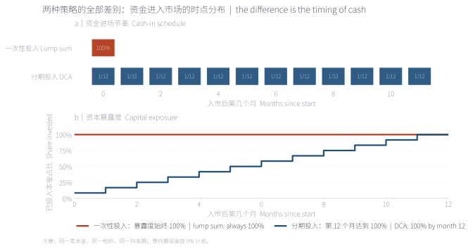
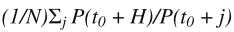
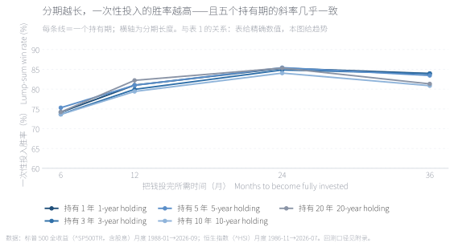
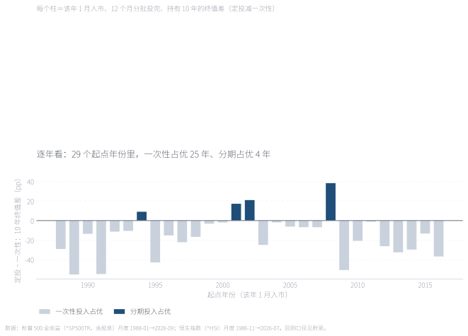
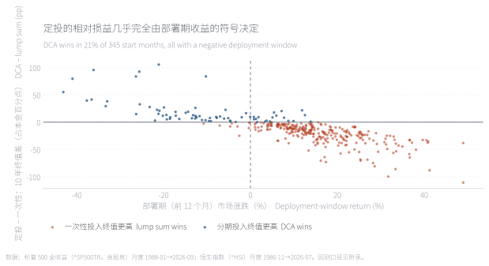
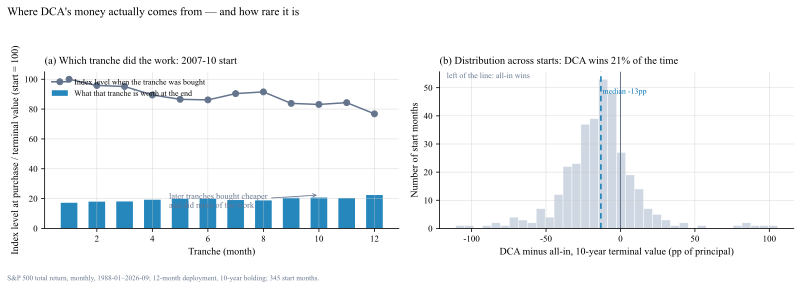
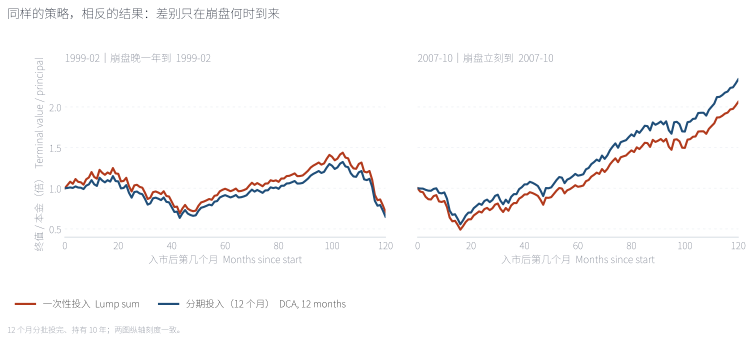
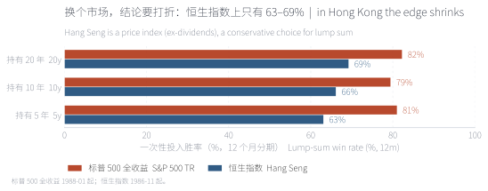

本文考察一个被广泛讨论但常被误述的问题：当投资者已持有一笔可投资资金时，"一次性投入"与"分期定额投入（DCA）"孰优？我们以标普 500 全收益指数与恒生指数共 942 个月度观测为样本，对每一个可能的起点构造两种策略的持有期终值，并比较其分布。结论是：一次性投入在约八成的起点上占优，其劣势区间高度集中于部署期（首十二个月）市场下跌的样本；该机制在两个市场、多种持有期与分期长度下均稳健。
关键词 DCA · 一次性投入 · 回测 · 多资产 · 行为偏差 · 组合执行
设想投资者在 t₀ 时刻持有一笔可投资资金，面前有两种部署方式：其一，在 t₀ 全额买入并持有至 T；其二，将同一笔资金等分为 N 期，自 t₀ 起逐期买入，未投部分以现金形式持有。两种方式的本金、标的与持有期完全相同，唯一差异在于资金进入市场的时点分布。本文研究的正是这一情形。
既有文献对此问题的结论并不含糊。Constantinides（1979）在一个标准期望效用框架下证明 DCA 并非最优策略；Rozeff（1994）与 Knight 和 Mandell（1992）分别以历史数据与数值模拟指出，一次性投入在期望收益上优于分期投入。[1][2][3] 然而实务界对 DCA 的偏好长期存在，Dichtl 与 Drobetz（2011）将其归因于前景理论框架下的投资者效用函数——当投资者对损失敏感、且以"购入均价"为参照点时，分期投入可以改善其主观效用；Hayley（2013）进一步把该偏好与认知误差联系起来。[4][5] 换言之，两种结论回答的并非同一个问题：前者讨论期望终值，后者讨论投资者效用与行为可行性。
近期研究进一步指出结论的环境依赖性。Vanguard（2023）以美国与国际数据发现一次性投入约在三分之二的样本中占优；[6] Kaur 等（2026）则在高通胀环境下重新检验该问题，发现相对优势会随宏观状态而变化。[7] 本文的贡献在于把上述讨论落到一个可复现的统一框架：同一笔资金、同一标的、同一持有期，对全部历史起点逐一比较，并把结果分解到"部署期收益"这一单一解释变量上。
在进入实证之前，有必要澄清一个常被混淆的概念区分。一次性投入（Lump-sum investing，LSI）指期初全额买入；分期定额投入（Dollar-cost averaging，DCA）指将同一笔资金等分为若干期买入；而定期定额储蓄指投资者以收入流量逐期买入，其资金本就陆续到达，不存在一次性投入这一选项；此外尚有价值平均（value averaging）等按目标市值倒算投入额的策略，机制与 DCA 不同，不在本文讨论范围。

上图（a）：一次性投入在第 0 个月把 100% 本金投入，分期投入则每月投入 1/12。下图（b）：把两者的资本暴露度画成曲线——一次性投入自始至终为 100%；分期投入在第 12 个月才达到 100%。两条曲线之间的面积，就是"留在场外"的资金：它在上涨行情中是纯粹的拖累，在下跌行情中才是保护。本文后续所有结果，都可以由这张图的差异解释。
Panel (a): a lump sum invests 100% of the capital at month 0, while DCA invests one twelfth each month. Panel (b) plots capital exposure: the lump sum is 100% throughout, whereas DCA only reaches 100% in month 12. The area between the two lines is the capital left outside the market — a drag when prices rise, protection when they fall.
来源：本文自绘示意；同一笔本金、同一标的、同一持有期，等待期现金按 0% 计息。
两条横条随时间增长，领先方实时标出。可以切换市场与起点：同一个起点在美股与港股的结果常常相反。
Both bars grow month by month and the leader is labelled live; switch market or start date and the ranking often flips.
来源：本文回测，数据见附录 A。
样本为两类资产的月度总收益序列：标普 500 全收益指数（^SP500TR，含股息）1988-01 至 2026-09 共 465 个月；恒生指数（^HSI）1986-11 至 2026-07 共 477 个月。对每一个月度起点 ，我们计算两种策略在持有 年后的终值：一次性投入的终值为 ；分期投入则是把同一本金等分到 个月买入，其终值为

，其中期次 。未投部分按 0% 计息——选择零利率是对 DCA 有利的假设，可避免结论偏向一次性投入。持有期取 1、3、5、10、20 年，分期长度取 6、12、24、36 个月。基准结果显示，一次性投入在终值期望与胜率两方面均占优。以 12 个月分期、10 年持有为例，标普 500 全收益口径下的完整起点共 345 个，其中一次性投入胜出 79%，终值中位数高出 0.13 倍本金；持有期延长至 20 年，中位差扩大至 0.29 倍。表中数字在持有期维度上并非单调，说明其并非由某一特定年代的行情驱动，而更可能来自一个与时间无关的机制——下文将予以识别。
| 持有期 | 6 个月分期 | 12 个月分期 | 24 个月分期 | 36 个月分期 |
|---|---|---|---|---|
| 1 年 | 74% | 81% | 85% | 84% |
| 3 年 | 74% | 80% | 85% | 84% |
| 5 年 | 75% | 81% | 85% | 83% |
| 10 年 | 74% | 79% | 84% | 81% |
| 20 年 | 74% | 82% | 85% | 81% |
每一格是"一次性终值高于定投终值"的月度起点占比。高亮单元为本文主要口径。数字不随持有期单调变化，说明它衡量的不是某个特定年代，而是"部署期市场涨跌"这一机制。
来源：本文回测；等待期现金按 0% 计息（对定投偏有利的假设）。

横轴是"多久把钱投完"，纵轴是"持有多久"；每格给出一次性投入的胜率与对应样本数 n。两个方向的规律都很稳定：投完得越慢、持有得越短，一次性投入的优势越大。24 个月那一列甚至更高（84–85%），因为等待时间越长，"没吃到上涨"的代价越大。红框为本文主要口径（12 个月、10 年、n = 345）。
Cells report the share of monthly start dates where the lump sum ends higher, together with the sample size n. The pattern is monotone in both directions: the longer the deployment and the shorter the holding period, the more often the lump sum wins. The 24-month column is highest because the cost of waiting grows with the deployment window.
来源：本文回测，数据与口径见附录。

为回应"是否挑选了有利年份"的质疑，我们把 1988–2016 年每一个 1 月起点逐一列出：柱高为分期投入减一次性投入的十年终值差。29 个年份中，一次性投入在 25 个年份占优；分期投入只在 4 个年份胜出，且全部集中在 2000 年前后与 2007–2008 年——与部署期下跌的年份完全对应。
To address the concern that favourable years were selected, every January start from 1988 to 2016 is shown. Bars are the ten-year terminal-value gap (DCA minus lump sum). The lump sum wins in 25 of 29 years; DCA wins only in four, all clustered around 2000 and 2007–08 — precisely the falling deployment windows.
来源：本文回测；每年 1 月入市、12 个月分批投完、持有 10 年。
为识别 DCA 相对优势的来源，我们把样本按部署期收益（前 12 个月的市场收益）分组考察。结果高度整齐：部署期收益为正时，DCA 终值几乎必然低于一次性投入；部署期收益为负时，DCA 反超。该关系不随起点年份或持有期而变化。其经济含义是直接的：分期投入等价于将一部分资金留在场外，而场外资金在上涨行情中构成确定的拖累，仅在下跌行情中转化为保护。因此 DCA 的相对损益并非来自"平均成本"这一统计性质，而来自资金暴露时间的重新分配。

横轴是前 12 个月的市场涨跌，纵轴是定投相对一次性的 10 年终值差（占本金百分点）：点几乎全部落在一条斜线上。定投赢的起点只占 21%，且全部落在左侧浅蓝区域——历史上"投完就跌"的窗口本来就只占两成。
Horizontal axis: market return over the first twelve months. Vertical axis: ten-year terminal-value gap (DCA minus lump sum), in percentage points. Points fall almost exactly on a line: DCA wins in 21% of starts, and all of them sit on the left, where the deployment window was negative.
来源：本文回测；345 个月度起点，12 个月分期、持有 10 年。
那么"分批买得更便宜"这件事到底值多少？把 2007-10 起步的 12 期拆开看，可以回答得更具体：真正扛起收益的是最后几期——它们买在危机后的低位；而 1999-02 起步的那一批，因为崩盘晚了一年，每一期都买得比起点更贵。这就是为什么"定投更便宜"这句话在方向上没错，却不能保证结果——它依赖崩盘何时到来。

左图（2007-10 起步）：灰虚线是每期买入时的指数位置，蓝柱是该期最终值——第 12 期贡献最大。右图：全部 345 个起点的差额分布，中位数 −13 个百分点，只有 21% 落在零线右侧；分布形状是"右尾薄、左尾长"，即定投大幅赢的情况很少，输一截的情况不少。
Left panel: for a 2007-10 start, the dashed line is the index level when each tranche was bought and the bars are each tranche's value after ten years; the later tranches did most of the work. Right panel: across all 345 starts the median gap is −13pp and only 21% sit right of zero — a thin right tail and a long left tail.
来源：本文回测；差额 = 定投终值 − 一次性终值。
上述机制可用两个真实起点加以说明。1999-02 入市的投资者，在其后的十二个月中市场继续上行，DCA 的平均购入价高于起点价格，十年后其终值为一次性投入的 0.92 倍；2007-10 入市的投资者，危机第一波随即到来，DCA 逐期买入的价格递减，十年后终值为一次性投入的 1.14 倍。同一策略、同一持有期，两个起点的终值差达 34 个百分点。这一对比表明：在样本内讨论"DCA 是否更优"时，若不指明起点，命题本身并不良定。

左：1999-02 起步，定投 0.65 倍、一次性 0.71 倍。右：2007-10 起步，定投 2.34 倍、一次性 2.06 倍。差别不在策略，而在崩盘来得早还是晚。
Left: starting in 1999-02, DCA ends at 0.65x versus 0.71x for the lump sum. Right: starting in 2007-10, DCA ends at 2.34x versus 2.06x. The difference is not the strategy but whether the crash arrived immediately or a year later.
来源：本文回测；12 个月分批、持有 10 年，阴影为部署期。
橙＝一次性投入、蓝＝定投；两线之间的色带标出当前领跑方，下方同步显示差距。历史事件（网络泡沫、金融危机、疫情、加息周期）标在时间轴上。换起点、换市场，结论会翻转。
Orange is the lump sum, blue is DCA; the band between the lines marks who is ahead, and the strip below tracks the gap. Historical events (dot-com, GFC, COVID, rate cycle) are marked on the time axis. Change the start date or the market and the conclusion flips.
来源：本文回测，数据见附录 A。
美股样本期的特征是"长期向上、回撤后修复"，这并非所有市场的常态。我们在恒生指数上重复同一检验（1986-11 起，477 个月，覆盖 1997、2000、2008、2015 及 2018–2022 多轮深度回撤与长期横盘），一次性投入的胜率由约 80% 降至 63–69%，且随持有期延长而进一步收敛。需要说明的是，恒生指数序列为价格指数、不含股息，因而系统性低估买入并持有策略，该口径对本结果具有保守倾向。这一发现支持一个更审慎的表述：一次性投入的优势依赖于标的资产的长期正漂移与投资者的回撤承受能力，而非某项统计定律。
The Hang Seng series is a price index excluding dividends, which understates buy-and-hold; the true gap is therefore likely wider than shown.
| 持有期 | 标普 500 全收益（美） | 恒生指数（港） |
|---|---|---|
| 5 年持有 | 81% | 63% |
| 10 年持有 | 79% | 66% |
| 20 年持有 | 82% | 69% |
恒生指数序列为价格指数（不含股息），这会低估买入并持有，因此对"一次性投入"是偏保守的口径——真实的差距可能比表中更大。
来源：本文回测。

原因不神秘：港股波动更大、横盘与深跌的时间更长，"等一等"的机会成本因此更低。结论："all-in 更好"不是普适定律，它建立在"市场长期向上、且你能承受回撤"这两个前提上。
Hong Kong equities are more volatile and spend longer flat or deeply drawn down, so waiting costs less. The advantage of investing immediately is conditional on a market that trends up and on an investor who can hold through drawdowns.
来源：本文回测；12 个月分期。
本文结果并不支持"DCA 无价值"这一通俗结论，而支持一个更精确的表述：一次性投入在期望终值意义上占优，分期投入在投资者效用意义上可能是次优但可行的选择。二者的差异可量化为"保险费用"：在 10 年持有期下，选择 12 个月分期的投资者，其中位终值比一次性投入低约 0.13 倍本金。这笔费用购买的是对"入场即遭遇回撤"这一特定状态风险的规避，以及行为层面的可持续性——对于在回撤中倾向于清仓的投资者而言，这一费用可能低于其放弃参与市场的隐性成本。
据此，我们提出四条可操作的部署原则。其一，按资金性质而非投资者性格分类：以收入流量形式到达的资金只能逐期投入，讨论在一次投入与分期投入之间展开；只有已持有的存量资金才存在本文意义上的选择。其二，存量资金的基准方案是尽快投入，三个合理例外为：资金在三年内需动用（不足以覆盖一个完整回撤周期）、投资者经自我评估确认无法承受 20% 的账面回撤、以及市场处于极端估值区间而需要以分批方式管理执行风险。其三，若选择分期，应缩短期限并预先承诺规则：本文证据支持 6–12 个月的区间，更长期限在期望意义上代价更高且不显著改善主观效用。其四，以可承受的最大回撤而非期望收益作为决策准则：胜率是样本频率，而非对单一路径的承诺。
最后，本文的结论边界值得强调。其一，样本仅覆盖两个市场，且其中一个仅具价格收益数据；其二，未计入交易成本、税费、汇率与现金流摩擦，其中前三项均会强化本文结论（使分期更不利）；其三，部署期收益的识别是样本内的统计关系，不构成对未来的预测。将上述框架扩展至更多资产类别、加入交易成本与税收摩擦，并在真实投资委托中检验行为假设，是后续研究的方向。
Question. An investor holds a lump sum and can either invest it immediately (lump-sum investing, LSI) or spread the same amount over N equal monthly purchases (dollar-cost averaging, DCA). Both use the same principal, the same asset and the same holding period; only the timing of cash differs. A separate question — investing monthly out of salary — is not the same problem, because there is no lump sum to deploy.
Data and method. S&P 500 total return (^SP500TR, dividends included), monthly, January 1988 to September 2026 (465 months), and the Hang Seng Index (^HSI), monthly, November 1986 to July 2026 (477 months). Every month is treated as a start date. From a start , the lump sum ends at after years; DCA splits the same principal into equal monthly purchases and ends at , with . Uninvested cash earns 0%, which favours DCA, over holding periods of 1 to 20 years.
Result 1 — the lump sum usually wins. With a 12-month deployment and a 10-year holding period, the lump sum ends higher in 79% of the 345 start months, with a median advantage of 0.13 times principal (0.29 times at a 20-year horizon).
Result 2 — the losses have a pattern. DCA wins in only 17–18% of starts, and those starts are almost exactly the ones in which the deployment window (the first twelve months) fell. DCA's win rate is therefore close to the probability of an immediate drawdown: it buys protection, not return.
Result 3 — timing, not conviction. Starting in February 1999, DCA ends at 0.65x against 0.71x for the lump sum, because the crash arrived a year late. Starting in October 2007, DCA ends at 2.34x against 2.06x, because the crash arrived immediately. A 34-percentage-point swing from the same rule.
Result 4 — market dependence. Repeating the test on the Hang Seng Index lowers the lump-sum win rate to 63–69%, and the gap narrows as the holding period lengthens: higher volatility and longer flat stretches make waiting cheaper.
Implications. Classify by the source of the money, not by temperament: salary flows can only be invested periodically. For an existing lump sum the default is to invest soon; the exceptions are money needed within three years, an investor who would sell into a 20% drawdown, and an extreme valuation regime. If spreading is chosen, keep it to six or twelve months and pre-commit the schedule. The median advantage forgone — about 0.13 times principal over ten years — is the price of insurance against an immediate drawdown.
Limitations. Two markets only, one of them price-only; cash earns 0% while waiting; no taxes, fees or FX; index survivorship flatters buy-and-hold. The deployment-window result is an in-sample regularity, not a forecast.
数据。标普 500 全收益指数（^SP500TR，含股息）月度收盘，1988-01 → 2026-09，共 465 个月；恒生指数（^HSI，价格）月度收盘，1986-11 → 2026-07，共 477 个月。来源为 Yahoo Finance 公开行情接口，访问日期 2026-10-03。
做法。把每一个月当作起点 t₀。一次性投入＝在 t₀ 全额买入并持有 H 年；定投＝分 N 个月等额买入，未投部分按 0% 计息，同样持有到 t₀+H。统计指标为"一次性终值高于定投终值"的起点占比，以及终值差额的分布。选择 0% 现金利率是对定投偏有利的假设。
未计入。交易成本、税费、汇率与心理因素。前三个都会让"分批"更吃亏（多笔交易成本更高），最后一个无法用回测衡量。
代码。tools/make_lca_data.py（回测与数据导出）、tools/make_lca_figs.py（全部静态图，研究简报风格）、tools/make_lca_note.py（本页与两个交互动画）。固定输入可完全复现。